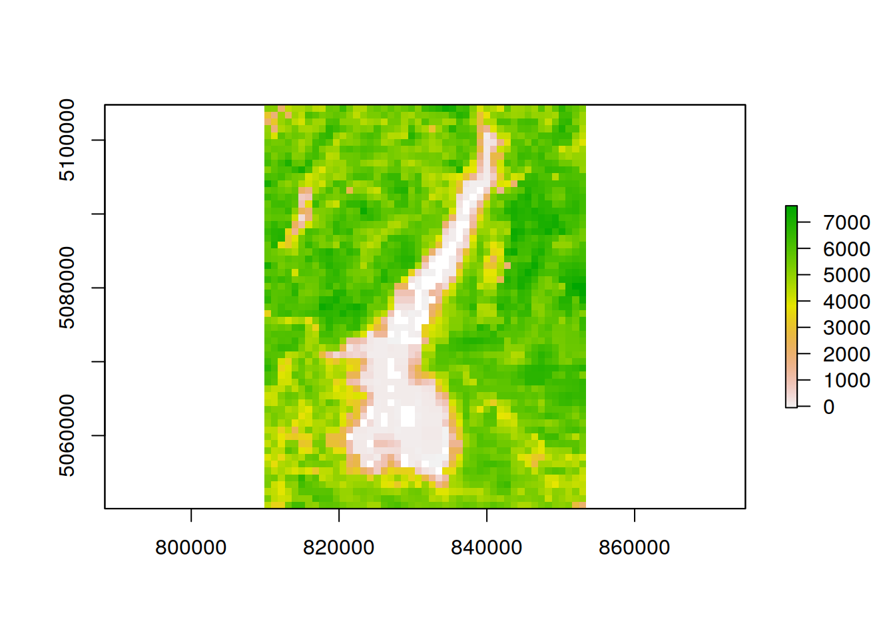
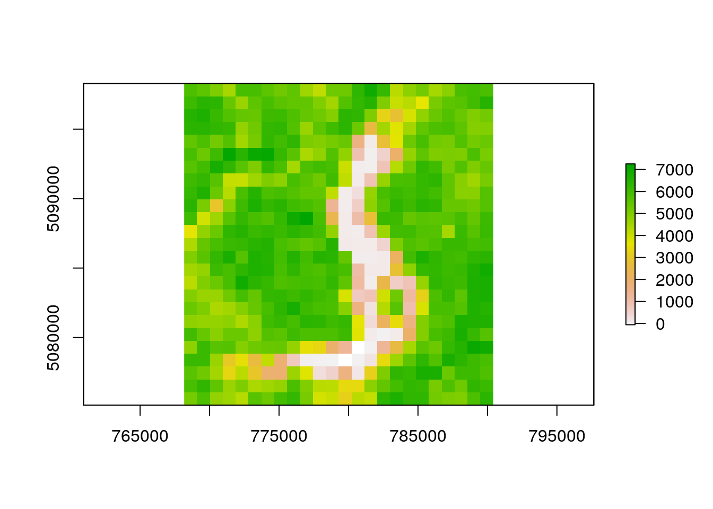

vignettes/noninteractive_execution.Rmd
noninteractive_execution.RmdMODIStsp can be launched in non-interactive mode within an R session by setting the optional GUI parameter to FALSE, and the Options_File parameter to the path of a previously saved JSON Options file. This allows to exploit MODIStsp functionalities within generic “R” processing scripts:
library(MODIStsp)
# **NOTE** Output files of examples are saved to file.path(tempdir(), "MODIStsp").
# You can run the examples with `gui = TRUE` to set a different output folder!
# --> Specify the path to a valid options file saved in advance from MODIStsp GUI
# Here we use a test json file saved in MODIStsp installation folder which
# downloads and processed 3 MOD13A2 images over the Como Lake (Lombardy, Italy)
# and retrieves NDVI and EVI data, plus the Usefulness Index Quality Indicator.
options_file <- system.file("testdata/test_MOD13A2.json", package = "MODIStsp")
# --> Launch the processing
MODIStsp(gui = FALSE, options_file = options_file, verbose = FALSE)
# Outputs are in this case in subfolder "MODIStsp/VI_16Days_1Km_v6" of
# `base::tempdir()`:
out_fold <- file.path(tempdir(), "MODIStsp/VI_16Days_1Km_v6")
list.files(out_fold)## [1] "EVI" "NDVI" "QA_usef" "Time_Series"## [1] "MOD13A2_EVI_2016_161.tif" "MOD13A2_EVI_2016_177.tif"If you need to process different MODIS products, you can prepare beforehand different MODIStsp options files by using the GUI, and then loop over them like this:
opts_files <- c(system.file("testdata/test_MOD13A2.json", package = "MODIStsp"),
system.file("testdata/test_MOD10A2.json", package = "MODIStsp"))
for (opts_file in opts_files) {
MODIStsp(gui = FALSE, options_file = opts_file)
}
# MOD13A2 ouputs
out_fold <- file.path(tempdir(), "MODIStsp/VI_16Days_1Km_v6")
list.files(out_fold)## [1] "EVI" "NDVI" "QA_usef" "Time_Series"## [1] "MOD13A2_EVI_2016_161.tif" "MOD13A2_EVI_2016_177.tif"# MOD10A2 ouputs
out_fold <- file.path(tempdir(), "MODIStsp/Surf_Temp_8Days_1Km_v6")
list.files(out_fold)## [1] "Days_Clear" "LST_Day_1km" "LST_Night_1km" "Time_Series"## [1] "MOD11A2_LST_Night_1km_2016_153.tif"
## [2] "MOD11A2_LST_Night_1km_2016_161.tif"
## [3] "MOD11A2_LST_Night_1km_2016_169.tif"
## [4] "MOD11A2_LST_Night_1km_2016_177.tif"Specifying also the spatial_file_path_ parameter overrides for example the output extent of the selected Options File. This allows to perform the same preprocessing on different extents using a single Options File. For example:
# Run the tool using the settings previously saved in a specific option file
# and specifying the extent from a spatial file allows to re-use the same
# processing settings to perform download and reprocessing on a different area
library(MODIStsp)
options_file <- system.file("testdata/test_MOD13A2.json", package = "MODIStsp")
spatial_file <- system.file("testdata/lakeshapes/garda_lake.shp", package = "MODIStsp")
MODIStsp(gui = FALSE, options_file = options_file,
spatial_file_path = spatial_file, verbose = FALSE)
# --> Create a character array containing a list of shapefiles (or other spatial files)
extent_list = list.files(system.file("testdata/lakeshapes/", package = "MODIStsp"),
full.names = TRUE, "\\.shp$")
extent_list## [1] "/home/lb/R/x86_64-pc-linux-gnu-library/3.6/MODIStsp/testdata/lakeshapes//garda_lake.shp"
## [2] "/home/lb/R/x86_64-pc-linux-gnu-library/3.6/MODIStsp/testdata/lakeshapes//iseo_lake.shp"# --> Loop on the list of spatial files and run MODIStsp using each of them to
# automatically define the output extent (A separate output folder is created for
# each input spatial file).
for (single_shape in extent_list) {
MODIStsp(gui = FALSE, options_file = options_file,
spatial_file_path = single_shape )
}
# output files are placed in separate folders:
outfiles_garda <- list.files(
file.path(tempdir(), "MODIStsp/garda_lake/VI_16Days_1Km_v6/EVI"),
full.names = TRUE)
outfiles_garda## [1] "/tmp/Rtmp64rTVh/MODIStsp/garda_lake/VI_16Days_1Km_v6/EVI/MOD13A2_EVI_2016_161.tif"
## [2] "/tmp/Rtmp64rTVh/MODIStsp/garda_lake/VI_16Days_1Km_v6/EVI/MOD13A2_EVI_2016_177.tif"
outfiles_iseo <- list.files(
file.path(tempdir(), "MODIStsp/iseo_lake/VI_16Days_1Km_v6/EVI"),
full.names = TRUE)
outfiles_iseo## [1] "/tmp/Rtmp64rTVh/MODIStsp/iseo_lake/VI_16Days_1Km_v6/EVI/MOD13A2_EVI_2016_161.tif"
## [2] "/tmp/Rtmp64rTVh/MODIStsp/iseo_lake/VI_16Days_1Km_v6/EVI/MOD13A2_EVI_2016_177.tif"